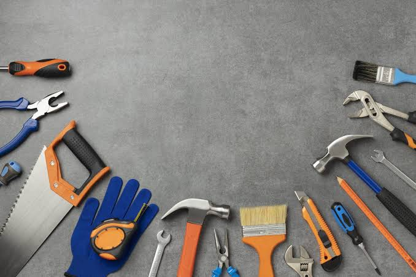

Herramientas básicas que deberías tener en tu hogar

Tener algunas herramientas básicas en casa puede ayudarte a solucionar pequeños problemas sin necesidad de realizar una compra cada vez que ocurre una reparación.
Una de las herramientas más conocidas es el martillo. Puede utilizarse para instalar clavos, realizar pequeñas reparaciones y trabajar con distintos materiales.
También es recomendable tener un juego de destornilladores. Existen distintos tamaños y tipos de punta, por lo que contar con varias opciones permite realizar diferentes tareas.
Una cinta métrica resulta útil para medir muebles, paredes, materiales y espacios antes de realizar una instalación.
Los alicates permiten sujetar, doblar o cortar algunos materiales y son útiles en numerosas reparaciones.
Finalmente, una caja de herramientas permite mantener todos estos elementos organizados y encontrarlos fácilmente cuando sean necesarios.